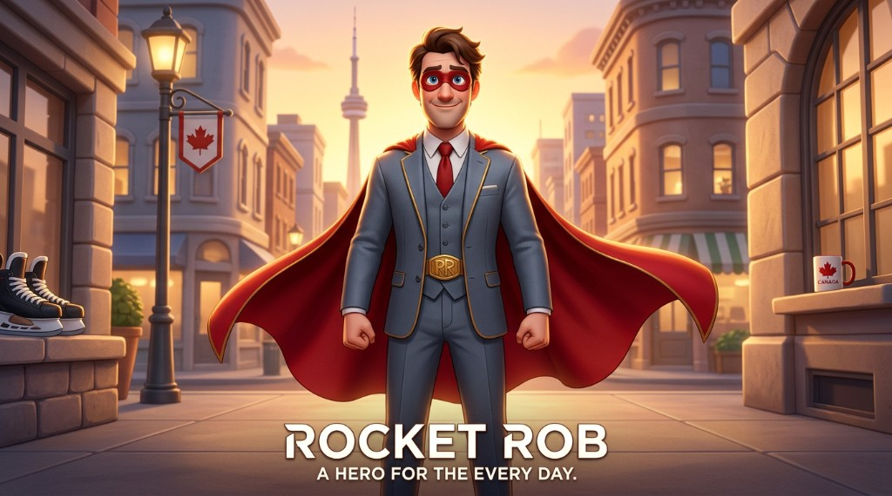
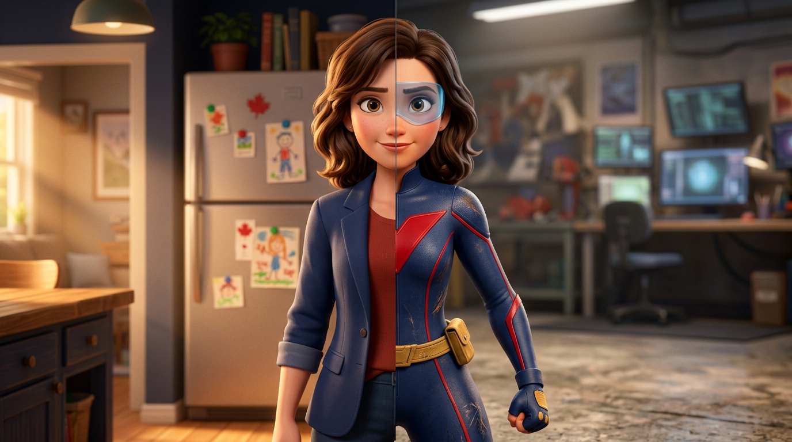
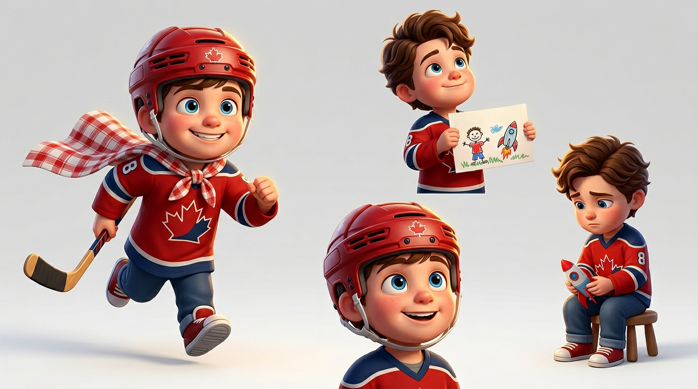
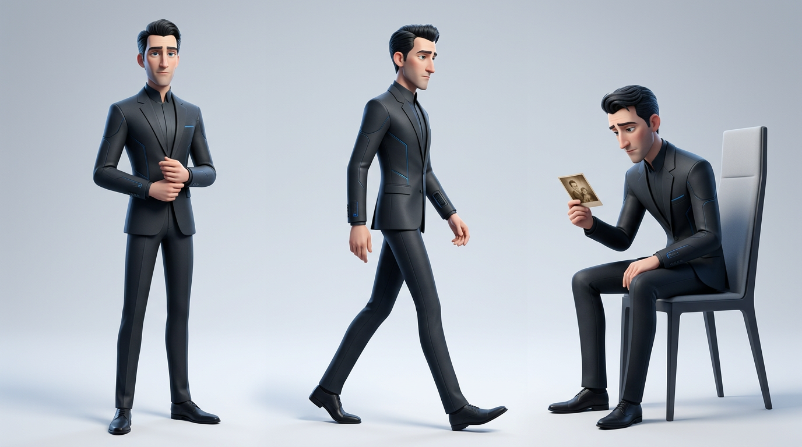
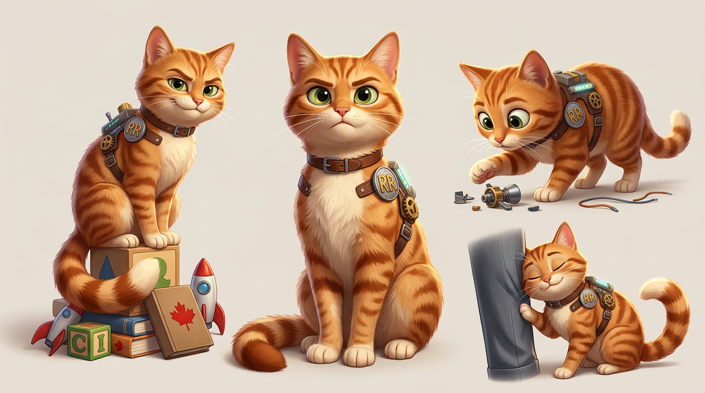
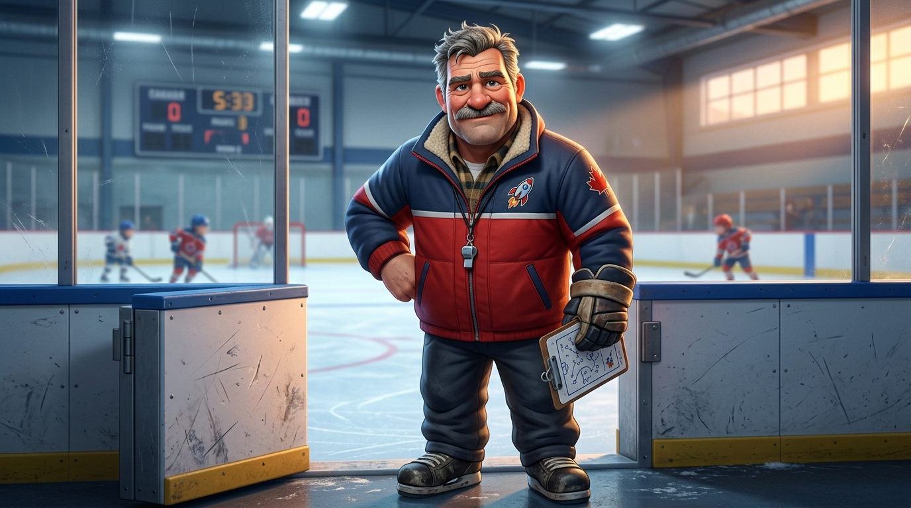
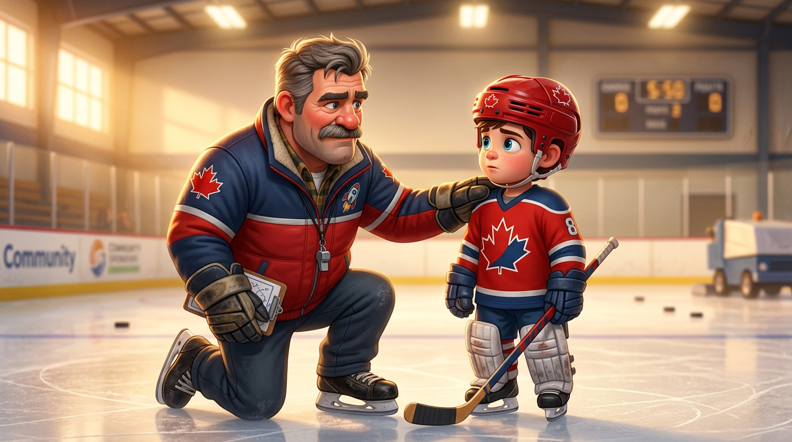
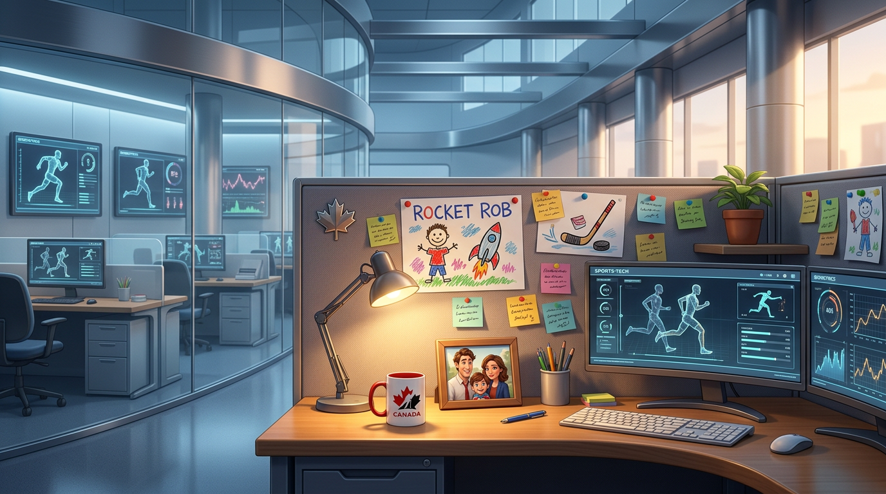
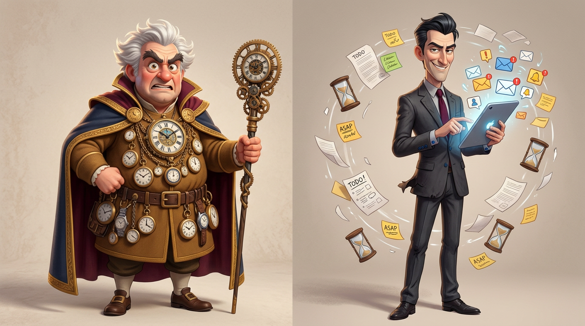
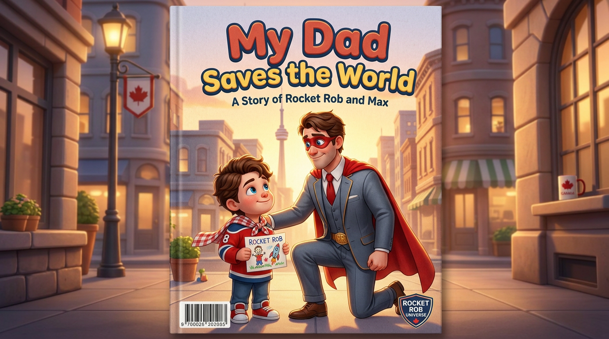

Everything behind the story. Full character profiles, three-act structure, world-building, series expansion, and the children's book universe. This is the room version — the full picture for anyone who wants to build it.
Every character argues a different position on the same question. Who they are underneath is what makes the audience stay.


| Beat | What Happens |
|---|---|
| Act One | Calm, competent, subtly too capable. Deadpan humor. Catches things she shouldn't. The audience doesn't notice yet. |
| Rising Load | Rob's double life means Claire carries more. Drives Max. Handles the house. The invisible load becomes visible. |
| The Crack | Sharp where she used to be warm. A flash of frustration she immediately buries. |
| Confrontation | "You're trying to save everyone except the people in this house." Then: "I know what you're trying to do. I've done it." |
| The Reveal (~65 min) | Watt attacks the neighborhood. Claire moves like someone who's done this before. "I was Vela before you were Rocket Rob." |
| Resolution | They fight as a team. She no longer carries it alone. Rob sees her. They stand together. Equal. |

| Story Moment | Emotional Age | What It Means |
|---|---|---|
| Opening — narrating everything | 7-ish | Pure, effortless imaginative belief. Costs nothing. |
| Act One montage | 7–8 | The bond at its most alive. |
| Narration fading | 8 | Starting to feel the weight of waiting. |
| The Silence | 8 going on 9 | Quietly outgrown — not by choice yet. By accumulation. |
| Hockey game bench | 9 (emotional) | "It's okay… my dad saves bigger things." He's protecting his dad even after the belief went quiet. |
| Final narration | Fully 9 | Old enough to know exactly what he's choosing. That's the weight. |


Orange tabby. Wears a repurposed Titan Sports Tech harness with gadgets he probably knocked off Rob's desk. Decided Rob was his human long before Rob agreed. Takes everything Rob says as direct instruction. Shows up every time without being asked. Doesn't need to learn love — he already has it. Expresses it sideways.

Max's hockey coach. Gruff exterior, warm interior. Speaks in sports metaphors that accidentally apply to life. Respects effort over talent. Reinforces the theme in the most grounded, real-world way possible — no superpowers, no philosophy. Just a man who's seen a lot of kids and knows what matters.

~90 minutes. Two parallel arcs colliding at a single turning point. The film's philosophical commitment: belief is the superpower, and it always belonged to the eight-year-old.
Fully fictional, unnamed — the Pixar way. The city is anywhere. Rob Lavoie is unmistakably Canadian. That distinction is the point.

The city is neutral and universal. Rob's Canadian-ness is personal, specific, and his. He brought it with him — the maple leaf pin on his lapel, the Team Canada mug, the hockey jersey he wears on weekends, the reflexive "sorry" to strangers, the particular dry humor of a man who grew up in a country that underplays everything. Victor Watt had the same origin and erased it. Rob held on. That contrast is the theme made visible.
The film establishes the world. The companion series deepens it — episodic stories, new villains, and the family's life after the world knows who they are. Max's narration is restored. Claire operates openly as Vela. Every episode runs two parallel tracks: a real family problem and a superhero crisis that mirrors it.

The time wizard who keeps dads at work. Too many clocks, too many watches, a fussy dramatic cape. He represents the endless grind — the feeling there's never enough time. An 8-year-old invented him from hearing adults say "I have to work overtime." In the film, he appears in Max's imagination overlay. In the series, he manipulates time itself.
The task monster that traps dads in work. A swirl of notifications, ASAP notes, hourglasses, and relentless buzzing. Annoying-dangerous, not cool-dangerous. He embodies modern work overload — the thing that steals time from family. Kids laugh at his chaos. Parents feel personally attacked. In the film, he's Max's fantasy. In the series, he's real.
The "Little Hero Moments" concept that powers the film is a picture book engine. Each book is one ordinary dad moment — transformed by a kid's imagination. Simple formula. Infinite stories. Proven emotional formula.

A picture book series for ages 4–7. Each book takes one ordinary moment — fixing the sink, making breakfast, driving to school — and shows two versions: the mundane reality, and Max's imagination transforming it into an epic. Simple. Repeatable. The formula that makes parents cry and kids cheer is a picture book formula at its core.
This isn't a movie tie-in. It's IP development that works independently — and makes the film's eventual pitch to studios significantly stronger because the property is already in the world.
The film asks: "What if a child's belief is a superpower?" The picture book answers it in 32 pages, for a four-year-old, at bedtime, with their dad reading it to them. That's not a tie-in product. That's the thesis of the entire property — delivered in its purest form. You don't need the movie to exist for the book to work. But the book makes everyone want the movie.